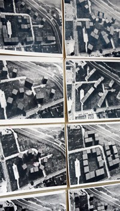

It should be noted that the Masters of Architecture is broken up into two tracks: M Arch 1: For students without an undergrad degree in architecture M Arch 2: For students with an undergrad degree in architecture In addition, the University of Cincinnati will be transitioning to a semester schedule beginning in 2012 and so timelines will change somewhat, but students will receive the same degree no matter their year of entry. To view a PDF of both tracks, please click here. (If PDF does not open in browser, check your Downloads folder.) |
 |